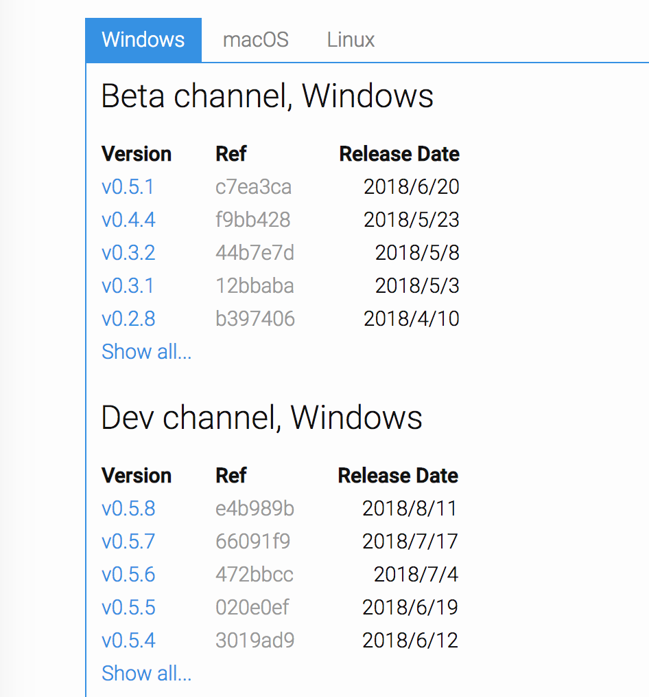
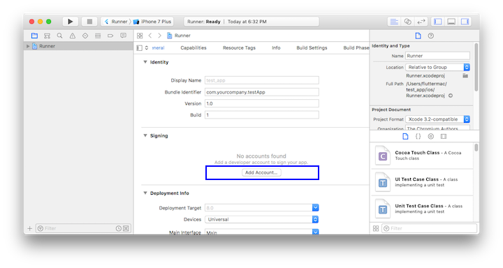
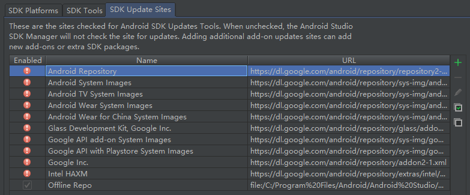

1.3 搭建Flutter开发环境¶
工欲善其事必先利其器，本节首先会分别介绍一下在Windows和macOS下Flutter SDK的安装，然后再介绍一下配IDE和模拟器的使用。
1.3.1 安装Flutter¶
由于Flutter会同时构建Android和IOS两个平台的发布包，所以Flutter同时依赖Android SDK和iOS SDK，在安装Flutter时也需要安装相应平台的构建工具和SDK。下面我们分别介绍一下Windows和macOS下的环境搭建。
注意：本节介绍的安装方式随着Flutter的升级可能会发生变化，如果下面介绍的内容在您安装Flutter时已经失效，请访问Flutter官网，按照官网最新的安装教程安装。
使用镜像¶
由于在国内访问Flutter有时可能会受到限制，Flutter官方为中国开发者搭建了临时镜像，大家可以将如下环境变量加入到用户环境变量中：
export PUB_HOSTED_URL=https://pub.flutter-io.cn
export FLUTTER_STORAGE_BASE_URL=https://storage.flutter-io.cn
注意： 此镜像为临时镜像，并不能保证一直可用，读者可以参考https://flutter.io/community/china 以获得有关镜像服务器的最新动态。
在Windows上搭建Flutter开发环境¶
系统要求¶
要安装并运行Flutter，您的开发环境必须满足以下最低要求:
操作系统: Windows 7 或更高版本 (64-bit)
磁盘空间: 400 MB (不包括Android Studio的磁盘空间).
工具: Flutter 依赖下面这些命令行工具.
PowerShell 5.0 或更新的版本
Git for Windows (Git命令行工具)；
如果已安装Git for Windows，请确保可以在命令提示符或PowerShell中运行 git 命令
获取Flutter SDK¶
去flutter官网下载其最新可用的安装包，下载地址：https://flutter.dev/docs/development/tools/sdk/releases ，打开后如图1-2所示：

注意，Flutter的渠道版本会不停变动，请以Flutter官网为准。另外，在中国大陆地区，要想正常获取安装包列表或下载安装包，可能需要翻墙，读者也可以去Flutter github项目下去下载安装包，地址：https://github.com/flutter/flutter/releases 。
将安装包zip解压到你想安装Flutter SDK的路径（如：
C:\src\flutter；注意，不要将flutter安装到需要一些高权限的路径如C:\Program Files\）。在Flutter安装目录的
flutter文件下找到flutter_console.bat，双击运行并启动flutter命令行，接下来，你就可以在Flutter命令行运行flutter命令了。
更新环境变量¶
如果你想在Windows系统自带命令行运行flutter命令，需要添加以下环境变量到用户PATH：
转到 “控制面板>用户帐户>用户帐户>更改我的环境变量”
在“用户变量”下检查是否有名为“Path”的条目:
如果该条目存在， 追加 flutter\bin的全路径，使用 ; 作为分隔符.
如果该条目不存在，创建一个新用户变量 Path ，然后将
flutter\bin的全路径作为它的值.
重启Windows以应用此更改.
运行 flutter doctor命令¶
在Flutter命令行运行如下命令来查看是否还需要安装其它依赖，如果需要，安装它们：
flutter doctor
该命令检查你的环境并在命令行窗口中显示报告。Dart SDK已经在打包在Flutter SDK里了，没有必要单独安装Dart。 仔细检查命令行输出以获取可能需要安装的其他软件或进一步需要执行的任务。
例如：
[-] Android toolchain - develop for Android devices
• Android SDK at D:\Android\sdk
✗ Android SDK is missing command line tools; download from https://goo.gl/XxQghQ
• Try re-installing or updating your Android SDK,
visit https://flutter.io/setup/#android-setup for detailed instructions.
第一次运行flutter命令（如flutter doctor）时，它会下载它自己的依赖项并自行编译。以后再运行就会快得多。缺失的依赖需要安装一下，安装完成后再运行flutter doctor命令来验证是否安装成功。
Android设置¶
Flutter依赖于Android Studio的全量安装。Android Studio不仅可以管理Android 平台依赖、SDK版本等，而且它也是Flutter开发推荐的IDE之一（当然，你也可以使用其它编辑器或IDE，我们将会在后面讨论）。
安装Android Studio¶
下载并安装 Android Studio，下载地址：https://developer.android.com/studio/index.html 。
启动Android Studio，然后执行“Android Studio安装向导”。这将安装最新的Android SDK、Android SDK平台工具和Android SDK构建工具，这些是用Flutter进行Android开发所需要的。
安装遇到问题？¶
如果在安装过程中遇到问题，可以先去flutter官网查看一下安装方式是否发生变化，或者在网上搜索一下解决方案。
在macOS上搭建Flutter开发环境¶
在masOS下可以同时进行Android和iOS设备的测试。
系统要求¶
要安装并运行Flutter，您的开发环境必须满足以下最低要求:
操作系统: macOS (64-bit)
磁盘空间: 700 MB (不包括Xcode或Android Studio的磁盘空间）.
工具: Flutter 依赖下面这些命令行工具.
bash、mkdir、rm、git、curl、unzip、which
获取Flutter SDK¶
去flutter官网下载其最新可用的安装包，官网地址：https://flutter.io/sdk-archive/#macos
注意，Flutter的渠道版本会不停变动，请以Flutter官网为准。另外，在中国大陆地区，要想正常获取安装包列表或下载安装包，可能需要翻墙，读者也可以去Flutter github项目下去下载安装包，地址：https://github.com/flutter/flutter/releases 。
解压安装包到你想安装的目录，如：
cd ~/development unzip ~/Downloads/flutter_macos_v0.5.1-beta.zip添加
flutter相关工具到path中：export PATH=`pwd`/flutter/bin:$PATH
此代码只能暂时针对当前命令行窗口设置PATH环境变量，要想永久将Flutter添加到PATH中请参考下面更新环境变量 部分。
运行 flutter doctor命令¶
这一步和Windows下步骤一致，不再赘述。
更新环境变量¶
将Flutter添加到PATH中，可以在任何终端会话中运行flutter命令。
对于所有终端会话永久修改此变量的步骤是和特定计算机系统相关的。通常，您会在打开新窗口时将设置环境变量的命令添加到执行的文件中。例如
确定您Flutter SDK的目录记为“FLUTTER_INSTALL_PATH”，您将在步骤3中用到。
打开(或创建)
$HOME/.bash_profile。文件路径和文件名可能在你的电脑上不同.添加以下路径:
export PATH=[FLUTTER_INSTALL_PATH]/flutter/bin:$PATH
例如笔者Flutter 安装目录是“~/code/flutter_dir”，那么代码为：
export PATH=~/code/flutter_dir/flutter/bin:$PATH
运行
source $HOME/.bash_profile刷新当前终端窗口。注意: 如果你使用终端是zsh，终端启动时
~/.bash_profile将不会被加载，解决办法就是修改～/.zshrc，在其中添加：source ～/.bash_profile验证“flutter/bin”是否已在PATH中：
echo $PATH
安装 Xcode¶
要为iOS开发Flutter应用程序，您需要Xcode 9.0或更高版本:
配置Xcode命令行工具以使用新安装的Xcode版本
sudo xcode-select --switch /Applications/Xcode.app/Contents/Developer对于大多数情况，当您想要使用最新版本的Xcode时，这是正确的路径。如果您需要使用不同的版本，请指定相应路径。确保Xcode许可协议是通过打开一次Xcode或通过命令
sudo xcodebuild -license同意过了.
使用Xcode，您可以在iOS设备或模拟器上运行Flutter应用程序。
安装Android Studio¶
和Window一样，要在Android设备上构建并运行Flutter程序都需要先安装Android Studio，读者可以先自行下载并安装Android Studio，在此不再赘述。
升级 Flutter¶
Flutter SDK分支¶
Flutter SDK有多个分支，如beta、dev、master、stable，其中stable分支为稳定分支（日后有新的稳定版本发布后可能也会有新的稳定分支，如1.0.0），dev和master为开发分支，安装flutter后，你可以运行flutter channel查看所有分支，如笔者本地运行后，结果如下：
Flutter channels:
beta
dev
* master
带”*”号的分支即你本地的Flutter SDK 跟踪的分支，要切换分支，可以使用flutter channel beta 或 flutter channel master，Flutter官方建议跟踪稳定分支，但你也可以跟踪master分支，这样可以查看最新的变化，但这样稳定性要低的多。
升级Flutter SDK和依赖包¶
要升级flutter sdk，只需一句命令：
flutter upgrade
该命令会同时更新Flutter SDK和你的flutter项目依赖包。如果你只想更新项目依赖包（不包括Flutter SDK），可以使用如下命令：
flutter packages get获取项目所有的依赖包。flutter packages upgrade获取项目所有依赖包的最新版本。
1.3.2 IDE配置与使用¶
理论上可以使用任何文本编辑器与命令行工具来构建Flutter应用程序。 不过，Flutter官方建议使用Android Studio和VS Code之一以获得更好的开发体验。Flutter官方提供了这两款编辑器插件，通过IDE和插件可获得代码补全、语法高亮、widget编辑辅助、运行和调试支持等功能，可以帮助我们极大的提高开发效率。下面我们分别介绍一下Android Studio和VS Code的配置及使用（Android Studio和VS Code读者可以在其官网获得最新的安装，由于安装比较简单，故不再赘述）。
Android Studio 配置与使用¶
由于Android Studio是基于IntelliJ IDEA开发的，所以读者也可以使用IntelliJ IDEA。
安装Flutter和Dart插件¶
需要安装两个插件:
Flutter插件： 支持Flutter开发工作流 (运行、调试、热重载等)。Dart插件： 提供代码分析 (输入代码时进行验证、代码补全等)。
安装步骤：
启动Android Studio。
打开插件首选项 (macOS：Preferences>Plugins, Windows：File>Settings>Plugins)。
选择 Browse repositories…，选择 flutter 插件并点击
install。重启Android Studio后插件生效。
接下来，让我们用Android Studio创建一个Flutter项目，然后运行它，并体验“热重载”。
创建Flutter应用¶
选择 File>New Flutter Project 。
选择 Flutter application 作为 project 类型, 然后点击 Next。
输入项目名称 (如
myapp)，然后点击 Next。点击 Finish。
等待Android Studio安装SDK并创建项目。
上述命令创建一个Flutter项目，项目名为myapp，其中包含一个使用Material 组件的简单演示应用程序。
在项目目录中，您应用程序的代码位于 lib/main.dart。
运行应用程序¶
定位到Android Studio工具栏，如图1-3所示：

在 target selector 中, 选择一个运行该应用的Android设备。如果没有列出可用，请选择 Tools>Android>AVD Manager 并在那里创建一个。
在工具栏中点击 Run图标。
如果一切正常, 您应该在您的设备或模拟器上会看到启动的应用程序：

体验热重载¶
Flutter 可以通过 热重载（hot reload） 实现快速的开发周期，热重载就是无需重启应用程序就能实时加载修改后的代码，并且不会丢失状态。简单的对代码进行更改，然后告诉IDE或命令行工具你需要重新加载（点击reload按钮），你就会在你的设备或模拟器上看到更改。
打开
lib/main.dart文件将字符串
'You have pushed the button this many times:'更改为'You have clicked the button this many times:'不要按“停止”按钮; 让您的应用继续运行.
要查更改，请调用 Save (
cmd-s/ctrl-s)，或者点击 热重载按钮 (带有闪电⚡️图标的按钮)。你会立即在运行的应用程序中看到更新的字符串。
VS Code的配置与使用¶
VS Code是一个轻量级编辑器，支持Flutter运行和调试。
安装flutter插件¶
启动 VS Code。
调用 View>Command Palette…。
输入 ‘install’, 然后选择 Extensions: Install Extension action。
在搜索框输入
flutter，在搜索结果列表中选择 ‘Flutter’, 然后点击 Install。选择 ‘OK’ 重新启动 VS Code。
验证配置
调用 View>Command Palette…
输入 ‘doctor’, 然后选择 ‘Flutter: Run Flutter Doctor’ action。
查看“OUTPUT”窗口中的输出是否有问题
创建Flutter应用¶
启动 VS Code
调用 View>Command Palette…
输入 ‘flutter’, 然后选择 ‘Flutter: New Project’ action
输入 Project 名称 (如
myapp), 然后按回车键指定放置项目的位置，然后按蓝色的确定按钮
等待项目创建继续，并显示main.dart文件
体验热重载¶
打开
lib/main.dart文件。将字符串
'You have pushed the button this many times:'更改为'You have clicked the button this many times:'。不要按“停止”按钮; 让您的应用继续运行。
要查看您的更改，请调用 Save (
cmd-s/ctrl-s), 或者点击 热重载按钮 (绿色圆形箭头按钮)。
你会立即在运行的应用程序中看到更新的字符串。
1.3.3 连接设备运行Flutter应用¶
Window下只支持为Android设备构建并运行Flutter应用，而macOS同时支持iOS和Android设备。下面分别介绍如何连接Android和iOS设备来运行flutter应用。
连接Android模拟器¶
要准备在Android模拟器上运行并测试Flutter应用，请按照以下步骤操作：
启动 Android Studio>Tools>Android>AVD Manager 并选择 Create Virtual Device.
选择一个设备并选择 Next。
为要模拟的Android版本选择一个或多个系统印象，然后选择 Next. 建议使用 x86 或 x86_64 image .
在 “Emulated Performance”下, 选择 Hardware - GLES 2.0 以启用 硬件加速.
验证AVD配置是否正确，然后选择 Finish。
有关上述步骤的详细信息，请参阅 Managing AVDs.
在“Android Virtual Device Manager”中，点击工具栏的 Run。模拟器启动并显示所选操作系统版本或设备的启动画面。
运行
flutter run启动您的设备。 连接的设备名是Android SDK built for <platform>，其中 platform 是芯片系列，如 x86。
连接Android真机设备¶
要准备在Android设备上运行并测试Flutter应用，需要Android 4.1（API level 16）或更高版本的Android设备.
在Android设备上启用 开发人员选项 和 USB调试 。详细说明可在Android文档中找到。
使用USB将手机插入电脑。如果设备出现调试授权提示，请授权你的电脑可以访问该设备。
在命令行运行
flutter devices命令以验证Flutter识别您连接的Android设备。运行启动你应用程序
flutter run。
默认情况下，Flutter使用的Android SDK版本是基于你的 adb 工具版本。 如果想让Flutter使用不同版本的Android SDK，则必须将该 ANDROID_HOME 环境变量设置为相应的SDK安装目录。
连接iOS模拟器¶
要准备在iOS模拟器上运行并测试Flutter应用，请按以下步骤操作：
在你的MAC上，通过 Spotlight 或以下命令找到模拟器：
open -a Simulator
通过检查模拟器 Hardware > Device 菜单中的设置，确保模拟器正在使用64位设备（iPhone 5s或更高版本）。
根据你电脑屏幕大小，模拟高清屏iOS设备可能会溢出屏幕。可以在模拟器的 Window> Scale 菜单下设置设备比例。
运行
flutter run启动flutter应用程序。
连接iOS真机设备¶
要将Flutter应用安装到iOS真机设备，需要一些额外的工具和一个Apple帐户，还需要在Xcode中进行一些设置。
安装 homebrew （如果已经安装了brew,跳过此步骤）。
打开终端并运行如下这些命令:
brew update brew install --HEAD libimobiledevice brew install ideviceinstaller ios-deploy cocoapods pod setup
如果这些命令中的任何一个失败并出现错误，请运行brew doctor并按照说明解决问题.
遵循Xcode签名流程来配置您的项目:
在你Flutter项目目录中通过
open ios/Runner.xcworkspace打开默认的Xcode workspace.在Xcode中，选择导航面板左侧中的
Runner项目。在
Runnertarget设置页面中，确保在 General > Signing > Team 下选择了你的开发团队。当你选择一个团队时，Xcode会创建并下载开发证书，向你的设备注册你的帐户，并创建和下载配置文件（如果需要）。要开始您的第一个iOS开发项目，您可能需要使用您的Apple ID登录Xcode，如图1-5：

任何Apple ID都支持开发和测试，但若想将应用分发到App Store，就必须注册Apple开发者计划，有关详情读者可以自行了解。
当您第一次attach真机设备进行iOS开发时，需要同时信任你的Mac和该设备上的开发证书。首次将iOS设备连接到Mac时，请在对话框中选择
Trust。
然后，转到iOS设备上的设置菜单，选择 常规>设备管理 并信任您的证书。
如果Xcode中的自动签名失败，请验证项目的 General > Identity > Bundle Identifier 值是否唯一，如图1-7所示：

运行
flutter run启动flutter应用程序。
1.3.4 常见配置问题¶
Android Studio问题¶

连接不上Android Repository¶
这也是最常见的问题之一，当你发现自己无法下载部分依赖的时候，请优先考虑这种情况。进入 File -> Settings -> Appearance & Behavior -> System Settings -> Android SDK -> SDK Update Sites 列表，可以看到此时的 Android Repository 无法连接，如图1-10所示：

这是由于要去Google下载Android SDK，但在国内目前无法访问Google所致，因此，我们可以配置代理或使用vpn。
安卓包配置问题¶
一般格式为
Could not HEAD **
Could not Get **
如：Android Studio Could not GET gradle-3.2.0.pom
这一类问题是由于无法连接到 Maven 库造成的，解决方法如下：
进入
当前所在项目名/android打开
build.gradle找到下面这一部分，并加上
maven { url 'http://maven.aliyun.com/nexus/content/groups/public/' }allprojects { repositories { google() jcenter() maven { url 'http://maven.aliyun.com/nexus/content/groups/public/' } //添加这一句 } }
进入 File/ Settings/ Build, Execution, Deployment/ BuildTools/ Gradle/ Android Studio 中，勾选上 Enable embedded Maven repository ，重启 Android Studio 即可解决。
**注意：**存在这样的一种情况，当你根据上述步骤设置了之后，依旧无法解决这个问题，并有类似于
Could not HEAD maven.aliyun.com的报错信息，请检查C:\Users\{user_name}\.gradle\gradle.properties是否有设置代理。删除后问题即可解决。
Hot Reload 热重载失效问题¶
在给 Terminal 之类的终端模拟器设置代理之后，会导致“Hot Reload”重载失效，此时调用 Save (cmd-s / ctrl-s)将不会进行热重载，热重载按钮 (带有闪电⚡️图标的按钮)也不会显示，将代理移除即可解决。
另外，有些情况下热重载是不生效的，比如修改了main函数、修改了全局静态方法等，读者可以认为“Hot Reload”只会重新构建整个widget树，如果变动不在构建widget树的过程中，“Hot Reload”就不会起作用。